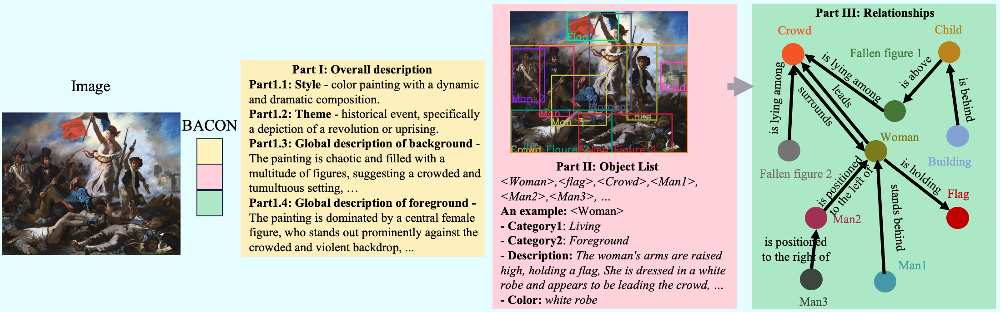
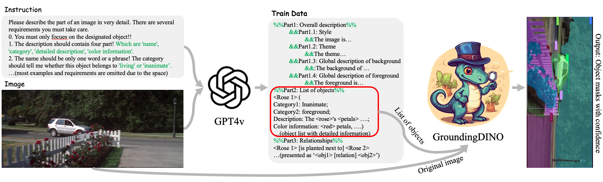
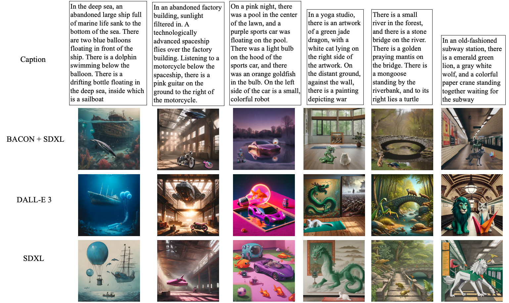

BACON: Bag-of-Concept Graph
BACON: Bag-of-Concept Graph
- Graph Construction.
- Deconstructing annotations: BACON decomposes the annotations of VLMs into basic elements and then combining them according to a specific structure.
- BACON-Captioner: Fine-tune a 13B LLaVA model on the BACON dataset to serve as a specialized captioner.
- Graph Structure: BACON deconstructs the image annotations into a specific graph structure, including overall description, object list, and relationships.
- Graph Grounding.
- 1. Get BACON: Derive BACON by BACON-Captioner;
- 2. Graph Grounding: Give each object corresponding region;
- 3. Distill Grounding: Using LLaVA to discard blatant incorrect regions;
- 4. Match Best: Match the most similar segmentation by CLIP.
- Root Words and Detected Catagories in BACON
- Substitutability: BACON-Captioner can effectively take over from GPT-4V in generating BACON from images.


 BACON Dataset
BACON Dataset
To the best of our knowledge, this is the first method designed for open-vocabulary tasks.
- Training Set.
- Large Scale: Refined 100k BACON-image pairs.
- Distill Process: Graph construction + graph grounding. (As is shown in the previous section)
- Test Benchmark.
- Large Scale: 4k images, 40k objects, and 200k relationships.
- Distill Process: Generate BACON-style (1)(2)(3) indivisually.
- Human Fine-tune: Human annotation is required to correct and verify the outputs.
- Detailed overview:
- 1. Segmentation by SAM.
- 2. Get Lists of Objects by VLMs.
- 3. Overall Description Annotations by VLMs.
- 4. Identify relationships by VLMs.


 BACON Capioner
BACON Capioner
- Image Generation Based on Captioner
- Interactively Modify BACON with Captioner
- Distinctive Style of BACON with Prompts


 Experiments
Experiments
 Downstream tasks benefiting from BACON
Downstream tasks benefiting from BACON
The adaptable nature of BACON's structure enhances models' comprehension of complex text and empowers them to undertake tasks previously beyond their reach. We conduct evaluations across five downstream tasks, including object detection, point question answering (PointQA), Pointing question answering (PointingQA), scene graph generation (SGG), and image generation.

Schematic diagram of multiple exemplary downstream tasks can benefit from BACON.
Specifically, BACON can:
Schematic diagram of multiple exemplary downstream tasks can benefit from BACON.
Specifically, BACON can:
- enable VLMs to carry out the point question answering task previously beyond their scope;
- assist text-to-image generative models such as SDXL in creating intricate images with higher precision as demanded by prompts;
- execute open-vocabulary scene graph generation tasks that were not feasible for other VLMs.
 BACON on video captioning
BACON on video captioning
While BACON is primarily developed for image data, it can be extended to create structured captions for videos with the help of additional techniques that address the temporal dimension of video content.

This is an example of BACON on video captioning, which includes three components: an overall description, an object list, and their relationships, each dynamically evolving over time. With respect to a prior frame, updates are color-coded: new elements in green, removed in red, altered in gold, and persistent ones in black. BACON thus adeptly captures the temporal changes and salient details of each video frame, while its structured nature potentially aids in downstream model comprehension.
This is an example of BACON on video captioning, which includes three components: an overall description, an object list, and their relationships, each dynamically evolving over time. With respect to a prior frame, updates are color-coded: new elements in green, removed in red, altered in gold, and persistent ones in black. BACON thus adeptly captures the temporal changes and salient details of each video frame, while its structured nature potentially aids in downstream model comprehension.
 Performance
Performance

Quantitative comparison on (Left) PointQA and (Right) PointingQA between BACON and baselines.
Win rate of pairwise comparisons between BACON-Captioner and other VLM-based captioners.
Comparison of open-vocabulary object detection among BACON, Grounding DINO, openvocabulary object detection models, and grounding caption models on BACON benchmark. GD represents Grounding DINO. We have calculated error bars for models that exhibit randomness.
Comparison on open-vocabulary scene graph generation task between BACON and multiple baselines on VG dataset and BACON benchmark. The number of correct predictions is used as the metric.
Quantitative comparison of VQA task between BACON and multiple VLM-based baselines, where the input image of the QA model is replaced by its caption to evaluate the performance of the captioner. The metric is the accuracy of answering questions.

Accuracy in depicting objects (Ao) and relationships (Ar) in images generated from text prompts, as evaluated by human. We compare SDXL enhanced by BACON with SDXL and DALL-E 3.
Precision and recall score calculated by manual annotation between BACON-Captioner and other VLM-based captioners.
Comparison of plan task between BACON and LayoutGPT on both MSCOCO and BACON benchmark.
Ablation study of method in graph grounding, exploring the improvement of introducing CLIP and LLaVA, where the experiment is conducted on BACON benchmark.
 Visualization on Video Captioning
Visualization on Video Captioning
While BACON is primarily developed for image data, it can be extended to create structured captions for videos with the help of additional techniques that address the temporal dimension of video content.
 Examples about BACON
Examples about BACON
Image Generation

Video Captioning


Examples of BACON in String Format Obtained by GPT-4V

Instruction for GPT-4V to Obtain BACON

BibTeX
@inproceedings{abc,
author = {def},
title = {ghi},
booktitle = {jkl},
year = {nmo}
}
Acknowledgement
This page was built using the Academic Project Page Template which was adopted from the Nerfies project page.
This website is licensed under a Creative
Commons Attribution-ShareAlike 4.0 International License.